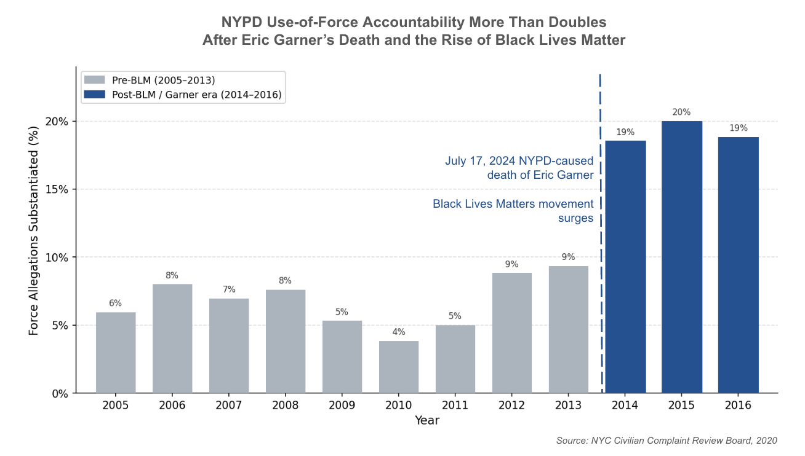
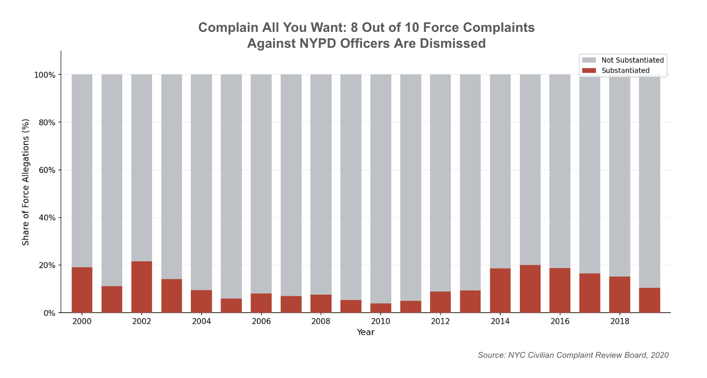

Proposition: NYPD Use-of-Force Accountability Increased After Eric Garner's Death and the Rise of Black Lives Matter
FOR the Proposition

Design Decisions and Rationale:
- Score: -1 | Truncated y-axis (0–20%). By capping the y-axis well below 100%, the rise from ~7% to ~20% occupies nearly the full height of the chart, making the increase look dramatic. In reality, substantiation rates never exceeded 20% even at the peak — a fact that's visually obscured by the zoomed in focus.
- Score: -0.5 | Color choice (blue for post-BLM bars). Blue is conventionally associated with police ("blue lives matter," NYPD uniforms), but here it's repurposed to signal progress and growth. The pre-BLM gray bars feel inactive while the blue bars feel decisive. This is mildly deceptive because blue carries institutional authority, which subconsciously legitimizes the "improvement" narrative. An earlier choice of color was red, which was too negatively charged and felt like it would confuse the audience into thinking things got "worse".
- Score: -1.5 | Time range cropped to 2005–2016. Starting at 2005 removes earlier years that would establish a longer baseline with higher substantiation rates, and cutting off at 2016 hides the post-2016 decline in substantiation rates back toward pre-BLM levels.
- Score: 1.5 | Value labels on each bar. Adding the exact percentage on top of each bar is an earnest choice, preventing the audience from misreading specific values and making the numbers verifiable.
- Score: 0.5 | Annotation of the Eric Garner / BLM event (added in post-processing). A vertical callout marking July 2014 with "Eric Garner killed by NYPD; BLM movement surges" was added as a text overlay to directly credit the political event with the visible uptick. This is a moderately earnest choice — it provides factual context that helps the viewer understand why the bars change color — but it also does persuasive work by anchoring the viewer's interpretation to a sympathetic narrative.
AGAINST the Proposition

Design Decisions and Rationale:
- Score: -1 | Leading title framing. "Complain All You Want" is charged, colloquial language that primes the viewer to feel cynicism before they even read the chart. It's deceptive in the sense that it editorializes the data rather than describing it neutrally, even though the underlying statistic (8 in 10 unaddressed) is accurate.
- Score: 1.5 | Full 0–100% proportional y-axis. Using a stacked bar scaled to 100% is an earnest choice — it presents the complete picture of every allegation filed and makes the gray "unsubstantiated" mass directly comparable across years. No data is hidden or rescaled to distort the trend.
- Score: 0.5 | No annotation of historical events. The FOR chart uses a BLM/Garner callout to guide the viewer's interpretation. By deliberately omitting any such annotation here, the AGAINST chart invites the viewer to see the full 20-year stretch as a flat, unchanging pattern — which is accurate but selectively emphasizes continuity over the real (if modest) 2014–2016 improvement.
- Score: 1 | Stacked bar encoding vs. line chart. A stacked proportional bar makes the dominant gray mass viscerally obvious in a way a line chart of the substantiation rate would not. The encoding choice is earnest — it genuinely represents the total composition of all allegations — but was chosen specifically because it makes the "unaddressed" portion visually overwhelming.
Final Reflection
The timeframe and scale in which we view data was an extremely interesting aspect of visualization that I hadn't previously put that much thought into. It was surprising how different the narrative can be depending on our focalization: the FOR case, for the most part, was most strongly advocated for by taking a specific temporal slice and displaying it with a truncated y-axis. Both of these choices, while deceptive, were completely within the realm of conventional practice. This blurred the line for me between persuasion and deception: if a truncated axis is standard practice in many published charts, is it really deceptive? I found myself concluding that the intent and disclosure behind a choice matters as much as, if not more than, the choice itself.
The AGAINST visualization pushed me in the opposite direction. Rather than hiding data, it showed more of it — a full 20-year range, a 100% proportional axis, no selective annotations — and yet it still argued a position forcefully. The design decision I found most interesting was the title: "Complain All You Want" frames the data with a tone of resignation that the chart itself never earns through any distortion. That felt like a clean example of textual framing doing deceptive work while the visual encoding remained technically honest. It made me realize that "ethical visualization" is not just about what you show or hide in the data, but about the full rhetorical context — titles, colors, and what you choose to annotate or omit — that surrounds it.